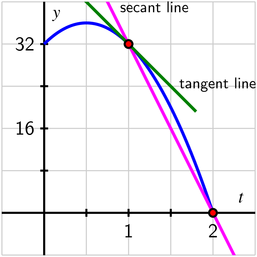
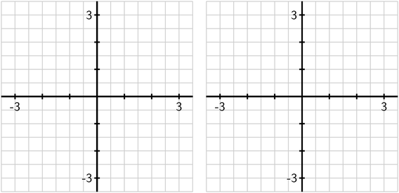

Section1.3The derivative of a function at a point¶ permalink
{In this section, we strive to understand the ideas generated by the following important questions:
How is the average rate of change of a function on a given interval defined, and what does this quantity measure?
How is the instantaneous rate of change of a function at a particular point defined? How is the instantaneous rate of change linked to average rate of change?
What is the derivative of a function at a given point? What does this derivative value measure? How do we interpret the derivative value graphically?
How are limits used formally in the computation of derivatives?
}
Subsection1.3.1Introduction
An idea that sits at the foundations of calculus is the instantaneous rate of change of a function. This rate of change is always considered with respect to change in the input variable, often at a particular fixed input value. This is a generalization of the notion of instantaneous velocity and essentially allows us to consider the question “how do we measure how fast a particular function is changing at a given point?” When the original function represents the position of a moving object, this instantaneous rate of change is precisely velocity, and might be measured in units such as feet per second. But in other contexts, instantaneous rate of change could measure the number of cells added to a bacteria culture per day, the number of additional gallons of gasoline consumed by going one mile per additional mile per hour in a car's velocity, or the number of dollars added to a mortgage payment for each percentage increase in interest rate. Regardless of the presence of a physical or practical interpretation of a function, the instantaneous rate of change may also be interpreted geometrically in connection to the function's graph, and this connection is also foundational to many of the main ideas in calculus.
In what follows, we will introduce terminology and notation that makes it easier to talk about the instantaneous rate of change of a function at a point. In addition, just as instantaneous velocity is defined in terms of average velocity, the more general instantaneous rate of change will be connected to the more general average rate of change. Recall that for a moving object with position function \(s\), its average velocity on the time interval \(t = a\) to \(t = a+h\) is given by the quotient
\[
AV_{[a,a+h]} = \frac{s(a+h)-s(a)}{h}.
\]
In a similar way, we make the following definition for an arbitrary function \(y = f(x).\)
Definition1.3.1
For a function \(f\), the average rate of change\knownindex{\lt main>average rate of change\lt /main>} of \(f\) on the interval \([a,a+h]\) is given by the value
\[
AV_{[a,a+h]} = \frac{f(a+h)-f(a)}{h}.
\]
Equivalently, if we want to consider the average rate of change of \(f\) on \([a,b]\), we compute
\[
AV_{[a,b]} = \frac{f(b)-f(a)}{b-a}.
\]
It is essential to understand how the average rate of change of \(f\) on an interval is connected to its graph.
Preview Activity
Suppose that \(f\) is the function given by the graph below and that \(a\) and \(a+h\) are the input values as labeled on the \(x\)-axis. Use the graph in Figure 1.3.2 to answer the following questions.
Figure1.3.2Plot of \(y = f(x)\) for Preview Activity .
Locate and label the points \((a,f(a))\) and \((a+h, f(a+h))\) on the graph.
Construct a right triangle whose hypotenuse is the line segment from \((a,f(a))\) to \((a+h,f(a+h))\). What are the lengths of the respective legs of this triangle?
What is the slope of the line that connects the points \((a,f(a))\) and \((a+h, f(a+h))\)?
Write a meaningful sentence that explains how the average rate of change of the function on a given interval and the slope of a related line are connected.
Subsection1.3.2The Derivative of a Function at a Point
\knownindex{\lt main>derivative\lt /main>}
Just as we defined instantaneous velocity in terms of average velocity, we now define the instantaneous rate of change of a function at a point in terms of the average rate of change of the function \(f\) over related intervals. In addition, we give a special name to “the instantaneous rate of change of \(f\) at \(a\),”\knownindex{\lt main>instantaneous rate of change\lt /main>} calling this quantity “the derivative of \(f\) at \(a\),” with this value being represented by the shorthand notation \(f'(a)\). Specifically, we make the following definition.
Definition1.3.3
Let \(f\) be a function and \(x = a\) a value in the function's domain. We define the derivative of \(f\) with respect to \(x\) evaluated at \(x = a\)\knownindex{\lt main>derivative\lt /main>\lt sub>definition\lt /sub>}, denoted \(f'(a)\), by the formula
Aloud, we read the symbol \(f'(a)\) as either “\(f\)-prime at \(a\)” or “the derivative of \(f\) evaluated at \(x = a\).” Much of the next several chapters will be devoted to understanding, computing, applying, and interpreting derivatives. For now, we make the following important notes.
The derivative of \(f\) at the value \(x = a\) is defined as the limit of the average rate of change of \(f\) on the interval \([a,a+h]\) as \(h \to 0\). It is possible for this limit not to exist, so not every function has a derivative at every point.
We say that a function that has a derivative at \(x = a\) is differentiable\knownindex{\lt main>differentiable\lt /main>} at \(x = a\).
The derivative is a generalization of the instantaneous velocity of a position function: when \(y = s(t)\) is a position function of a moving body, \(s'(a)\) tells us the instantaneous velocity of the body at time \(t=a\).
Because the units on \(\frac{f(a+h)-f(a)}{h}\) are “units of \(f\) per unit of \(x\),” the derivative has these very same units. For instance, if \(s\) measures position in feet and \(t\) measures time in seconds, the units on \(s'(a)\) are feet per second.
Because the quantity \(\frac{f(a+h)-f(a)}{h}\) represents the slope of the line through \((a,f(a))\) and \((a+h, f(a+h))\), when we compute the derivative we are taking the limit of a collection of slopes of lines, and thus the derivative itself represents the slope of a particularly important line.
While all of the above ideas are important and we will add depth and perspective to them through additional time and study, for now it is most essential to recognize how the derivative of a function at a given value represents the slope of a certain line. Thus, we expand upon the last bullet item above.
As we move from an average rate of change to an instantaneous one, we can think of one point as “sliding towards” another. In particular, provided the function has a derivative at \((a,f(a))\), the point \((a+h,f(a+h))\) will approach \((a,f(a))\) as \(h \to 0\). Because this process of taking a limit is a dynamic one, it can be helpful to use computing technology to visualize what the limit is accomplishing. While there are many different options 1 For a helpful collection of java applets, consider the work of David Austin of Grand Valley State University at \href{http://gvsu.edu/s/5r}{http://gvsu.edu/s/5r}, and the particularly relevant example at \href{http://gvsu.edu/s/5s}{http://gvsu.edu/s/5s}. For applets that have been built in Geogebra, a nice example is the work of Marc Renault of Shippensburg University at \href{http://gvsu.edu/s/5p}{http://gvsu.edu/s/5p}, with the example at \href{http://gvsu.edu/s/5q}{http://gvsu.edu/s/5q} being especially fitting for our work in this section. There are scores of other examples posted by other authors on the internet., one of the best is a java applet in which the user is able to control the point that is moving. See the examples referenced in the footnote here, or consider building your own, perhaps using the fantastic free program Geogebra 2 Available for free download from \href{http://geogebra.org}{http://geogebra.org}..
In Figure 1.3.4, we provide a sequence of figures with several different lines through the points \((a, f(a))\) and \((a+h,f(a+h))\) that are generated by different values of \(h\). These lines (shown in the first three figures in magenta), are often called secant lines \knownindex{\lt main>secant line\lt /main>} to the curve \(y = f(x)\). A secant line to a curve is simply a line that passes through two points that lie on the curve. For each such line, the slope of the secant line is \(m = \frac{f(a+h) - f(a)}{h}\), where the value of \(h\) depends on the location of the point we choose. We can see in the diagram how, as \(h \to 0\), the secant lines start to approach a single line that passes through the point \((a,f(a))\). In the situation where the limit of the slopes of the secant lines exists, we say that the resulting value is the slope of the tangent line to the curve. This tangent line\knownindex{\lt main>tangent line\lt /main>} (shown in the right-most figure in green) to the graph of \(y = f(x)\) at the point \((a,f(a))\) is the line through \((a,f(a))\) whose slope is \(m = f'(a)\).
Figure1.3.4A sequence of secant lines approaching the tangent line to \(f\) at \((a,f(a))\).
As we will see in subsequent study, the existence of the tangent line at \(x = a\) is connected to whether or not the function \(f\) looks like a straight line when viewed up close at \((a,f(a))\), which can also be seen in Figure 1.3.5, where we combine the four graphs in Figure 1.3.4 into the single one on the left, and then we zoom in on the box centered at \((a,f(a))\), with that view expanded on the right (with two of the secant lines omitted). Note how the tangent line sits relative to the curve \(y = f(x)\) at \((a,f(a))\) and how closely it resembles the curve near \(x = a\).
Figure1.3.5A sequence of secant lines approaching the tangent line to \(f\) at \((a,f(a))\). At right, we zoom in on the point \((a,f(a))\). The slope of the tangent line (in green) to \(f\) at \((a,f(a))\) is given by \(f'(a)\).
At this time, it is most important to note that \(f'(a)\), the instantaneous rate of change of \(f\) with respect to \(x\) at \(x = a\), also measures the slope of the tangent line\knownindex{\lt main>tangent line\lt /main>\lt sub>slope\lt /sub>} to the curve \(y = f(x)\) at \((a,f(a))\). The following example demonstrates several key ideas involving the derivative of a function.
For the function given by \(f(x) = x - x^2\), use the limit definition of the derivative to compute \(f'(2)\). In addition, discuss the meaning of this value and draw a labeled graph that supports your explanation.
Now we use the rule for \(f\), and observe that \(f(2) = 2 - 2^2 = -2\) and \(f(2+h) = (2+h) - (2+h)^2.\) Substituting these values into the limit definition, we have that
Observe that with \(h\) in the denominator and our desire to let \(h \to 0\), we have to wait to take the limit (that is, we wait to actually let \(h\) approach 0). Thus, we do additional algebra. Expanding and distributing in the numerator,
Next, we observe that there is a common factor of \(h\) in both the numerator and denominator, which allows us to simplify and find that
\[
f'(2) = \lim_{h \to 0} (-3-h).
\]
Finally, we are able to take the limit as \(h \to 0\), and thus conclude that \(f'(2) = -3\).
Now, we know that \(f'(2)\) represents the slope of the tangent line to the curve \(y = x - x^2\) at the point \((2,-2)\); \(f'(2)\) is also the instantaneous rate of change of \(f\) at the point \((2,-2)\). Graphing both the function and the line through \((2,-2)\) with slope \(m = f'(2) = -3\), we indeed see that by calculating the derivative, we have found the slope of the tangent line at this point, as shown in Figure 1.3.7.
Figure1.3.7The tangent line to \(y = x - x^2\) at the point \((2,-2)\).\hspace{5.0in}
The following activities will help you explore a variety of key ideas related to derivatives.
Consider the function \(f\) whose formula is \(\displaystyle f(x) = 3 - 2x\).
What familiar type of function is \(f\)? What can you say about the slope of \(f\) at every value of \(x\)?
Compute the average rate of change of \(f\) on the intervals \([1,4]\), \([3,7]\), and \([5,5+h]\); simplify each result as much as possible. What do you notice about these quantities?
Use the limit definition of the derivative to compute the exact instantaneous rate of change of \(f\) with respect to \(x\) at the value \(a = 1\). That is, compute \(f'(1)\) using the limit definition. Show your work. Is your result surprising?
Without doing any additional computations, what are the values of \(f'(2)\), \(f'(\pi)\), and \(f'(-\sqrt{2})\)? Why?
If \(f(x) = 3x^2 + 2x - 4\), we say “\(f\) is quadratic.” If \(f(x) = 5 e^{2x-1}\), we say “\(f\) is exponential.” What do we say about \(f(x) = 3-2x\).
Remember that to compute the average rate of change of \(f\) on \([a,b]\), we calculate \(\frac{f(b)-f(a)}{b-a}\).
Because \(f(x) = 3 - 2x\) is of the form \(f(x) = mx + b\), we call \(f\) a linear function.
The average rate of change on \([1,4]\) is \(\frac{f(4)-f(1)}{4-1} = \frac{-5 - 1}{3} = -2\). Similar calculations show the average rate of change on \([3,7]\) is also \(-2\). On \([5,5+h]\), observe that
\[
\frac{f(5+h)-f(5)}{h} = \frac{3-2(5+h) - (3-10)}{h} = \frac{3 - 10 - 2h + 7}{h} = \frac{-2h}{h} = -2.
\]
A water balloon is tossed vertically in the air from a window. The balloon's height in feet at time \(t\) in seconds after being launched is given by \(s(t) = -16t^2 + 16t + 32\). Use this function to respond to each of the following questions.
Sketch an accurate, labeled graph of \(s\) on the axes provided in Figure 1.3.10. You should be able to do this without using computing technology.
Figure1.3.10Axes for plotting \(y = s(t)\) in Activity 1.3.9.
Compute the average rate of change of \(s\) on the time interval \([1,2]\). Include units on your answer and write one sentence to explain the meaning of the value you found.
Use the limit definition to compute the instantaneous rate of change of \(s\) with respect to time, \(t\), at the instant \(a = 1\). Show your work using proper notation, include units on your answer, and write one sentence to explain the meaning of the value you found.
On your graph in (a), sketch two lines: one whose slope represents the average rate of change of \(s\) on \([1,2]\), the other whose slope represents the instantaneous rate of change of \(s\) at the instant \(a=1\). Label each line clearly.
For what values of \(a\) do you expect \(s'(a)\) to be positive? Why? Answer the same questions when “positive” is replaced by “negative” and “zero.”
Show that the quadratic function has \(t\)-intercepts at \((2,0)\) and \((-1,0)\); \(s\)-intercept \((0,32)\); and vertex at the point where \(t = \frac{1}{2}\).
Since \(s(t) = -16t^2 + 16t + 32 = -16(t^2 - t - 2) = -16(t-2)(t+1)\), \(s\) has \(t\)-intercepts at \((2,0)\) and \((-1,0)\); the \(s\)-intercept is clearly \((0,32)\); and the vertex is \((\frac{1}{2},36)\).
Observe that \(\frac{s(2)-s(1)}{2-1} = \frac{0 - 32}{1} = -32\) feet per second. This value represents the average rate at which the ball is falling over the time interval from \(t = 1\) to \(t = 2\).
We plot and label the secant line through \((1,s(1))\) and \((2,s(2))\), as well as the tangent line through \((1,s(1))\) with slope \(s'(1)\).

Observe that whenever the ball is rising, it's position function is rising, and thus the slope of its tangent line at any such point will be positive. This means that we should find \(s'(a)\) to be positive whenever \(0 \le a \lt \frac{1}{2}\), and similarly \(s'(a)\) to be negative whenever \(\frac{1}{2} \lt a \lt 2\) (which is when the ball is falling). At the instant \(a = \frac{1}{2}\), the ball is at its vertex and is neither rising nor falling, and at that point, \(s'(\frac{1}{2}) = 0.\)
A rapidly growing city in Arizona has its population \(P\) at time \(t\), where \(t\) is the number of decades after the year 2010, modeled by the formula \(P(t) = 25000 e^{t/5}\). Use this function to respond to the following questions.
Sketch an accurate graph of \(P\) for \(t = 0\) to \(t = 5\) on the axes provided in Figure 1.3.12. Label the scale on the axes carefully.
Figure1.3.12Axes for plotting \(y = P(t)\) in Activity 1.3.11.
Compute the average rate of change of \(P\) between 2030 and 2050. Include units on your answer and write one sentence to explain the meaning (in everyday language) of the value you found.
Use the limit definition to write an expression for the instantaneous rate of change of \(P\) with respect to time, \(t\), at the instant \(a = 2\). Explain why this limit is difficult to evaluate exactly.
Estimate the limit in (c) for the instantaneous rate of change of \(P\) at the instant \(a = 2\) by using several small \(h\) values. Once you have determined an accurate estimate of \(P'(2)\), include units on your answer, and write one sentence (using everyday language) to explain the meaning of the value you found.
On your graph above, sketch two lines: one whose slope represents the average rate of change of \(P\) on \([2,4]\), the other whose slope represents the instantaneous rate of change of \(P\) at the instant \(a=2\).
In a carefully-worded sentence, describe the behavior of \(P'(a)\) as \(a\) increases in value. What does this reflect about the behavior of the given function \(P\)?
\(P(t)\) is the standard exponential function, scaled by \(25000\).
Use the formula for the average rate of change of a function.
Because of the exponential nature of \(P(t)\), we're not able to simplify \(\frac{P(2+h)-P(2)}{h}\) in a way that removes \(h\) from the denominator.
Try using \(h = 0.001, 0.0001, 0.00001\) and \(h = -0.001, -0.0001, -0.00001\). Be careful not to round or use computing precision that is too limited.
For the first line, think about the points \((2,P(2))\) and \((4,P(4))\).
Visualize the slope of the tangent line and how it changes as a point moves along the curve.
Try using \(h = 0.001, 0.0001, 0.00001\) and \(h = -0.001, -0.0001, -0.00001\). Be careful not to round or use computing precision that is too limited. Think about how using the two values of \(h\) nearest 0 together could give you the most accurate result.
For the first line, think about the points \((2,P(2))\) and \((4,P(4))\). For the second, try the line through \((2,P(2))\) with slope \(P'(2)\).
Visualize the slope of the tangent line and how it changes as a point moves along the curve. Does the slope of the tangent line increase, decrease, or stay the same as the point of tangency moves along the curve from right to left?
\(AV_{[2,4]} = \frac{P(4)-P(2)}{4-2} = \frac{25000e^{4/5} - 25000e^{2/5}}{2} \approx 9171\) people per decade is expected to be the average rate of change of the city's population over the two decades from 2030 to 2050.
Note that
\begin{align*}
P'(2) \amp = \amp \lim_{h \to 0} \frac{P(2+h)-P(2)}{h} = \lim_{h \to 0} \frac{25000 e^{(2+h)/5}-25000e^{2/5}}{h}\\
\amp = \amp \lim_{h \to 0} \frac{25000 e^{2/5} e^{h/5} -25000e^{2/5}}{h} = \lim_{h \to 0} 25000e^{2/5}\left( \frac{e^{h/5} - 1}{h}\right)
\end{align*}
Because there is no way to remove a factor of \(h\) from the numerator, we cannot eliminate the \(h\) that is making the denominator go to zero, so it appears we need to be content estimating the limit with small values of \(h\).
Using \(h = 0.00001\), we find \(\frac{P(2+0.00001)-P(2)}{0.00001} \approx 7457\); using \(h = -0.00001\), we find \(\frac{P(2-0.00001)-P(2)}{-0.00001} \approx 7460\). Averaging these two results, we find that
\[
P'(2) = \lim_{h \to 0} \frac{P(2+h)-P(2)}{h} \approx 7458.5
\]
which is measured in people per decade.
See the graph provided in (a) above. The magenta line has slope equal to the average rate of change of \(P\) on \([2,4]\), while the green line is the tangent line at \((2,P(2))\) with slope \(P'(2)\).
If we consider the point where \(t = a\) and let \(a\) start at 0 and then increase, it appears that the tangent line's slope at the point \((a,P(a))\) will increase as \(a\) increases.
\begin{authornote}
This is an author note.
\end{authornote}
\item The average rate of change of a function \(f\) on the interval \([a,b]\) is \(\ds \frac{f(b)-f(a)}{b-a}\). The units on the average rate of change are units of \(f\) per unit of \(x\), and the numerical value of the average rate of change represents the slope of the secant line between the points \((a,f(a))\) and \((b,f(b))\) on the graph of \(y = f(x)\). If we view the interval as being \([a,a+h]\) instead of \([a,b]\), the meaning is still the same, but the average rate of change is now computed by \(\ds \frac{f(a+h)-f(a)}{h}\).
\item The instantaneous rate of change with respect to \(x\) of a function \(f\) at a value \(x = a\) is denoted \(f'(a)\) (read “the derivative of \(f\) evaluated at \(a\)” or “\(f\)-prime at \(a\)”) and is defined by the formula
provided the limit exists. Note particularly that the instantaneous rate of change at \(x = a\) is the limit of the average rate of change on \([a,a+h]\) as \(h \to 0\).
\item Provided the derivative \(f'(a)\) exists, its value tells us the instantaneous rate of change of \(f\) with respect to \(x\) at \(x = a\), which geometrically is the slope of the tangent line to the curve \(y = f(x)\) at the point \((a,f(a))\). We even say that \(f'(a)\) is the slope of the curve \(y = f(x)\) at the point \((a,f(a))\).
\item Limits are the link between average rate of change and instantaneous rate of change: they allow us to move from the rate of change over an interval to the rate of change at a single point.
\hrulefill
\begin{exercises}
\item Consider the graph of \(y = f(x)\) provided in Figure 1.3.13.
On the graph of \(y = f(x)\), sketch and label the following quantities:
the secant line to \(y = f(x)\) on the interval \([-3,-1]\) and the secant line to \(y = f(x)\) on the interval \([0,2]\).
the tangent line to \(y = f(x)\) at \(x = -3\) and the tangent line to \(y = f(x)\) at \(x = 0\).
Figure1.3.13Plot of \(y = f(x)\).
What is the approximate value of the average rate of change of \(f\) on \([-3,-1]\)? On \([0,2]\)? How are these values related to your work in (a)?
What is the approximate value of the instantaneous rate of change of \(f\) at \(x = -3\)? At \(x = 0\)? How are these values related to your work in (a)?
\item For each of the following prompts, sketch a graph on the provided axes in Figure 1.3.14 of a function that has the stated properties.
\(y = f(x)\) such that
the average rate of change of \(f\) on \([-3,0]\) is \(-2\) and the average rate of change of \(f\) on \([1,3]\) is 0.5, and
the instantaneous rate of change of \(f\) at \(x = -1\) is \(-1\) and the instantaneous rate of change of \(f\) at \(x = 2\) is 1.
\(y = g(x)\) such that
\(\frac{g(3)-g(-2)}{5} = 0\) and \(\frac{g(1)-g(-1)}{2} = -1\), and
\(g'(2) = 1\) and \(g'(-1) = 0\)
Figure1.3.14Axes for plotting \(y = f(x)\) in (a) and \(y = g(x)\) in (b).
\item Suppose that the population, \(P\), of China (in billions) can be approximated by the function \(P(t) = 1.15(1.014)^t\) where \(t\) is the number of years since the start of 1993.
According to the model, what was the total change in the population of China between January 1, 1993 and January 1, 2000? What will be the average rate of change of the population over this time period? Is this average rate of change greater or less than the instantaneous rate of change of the population on January 1, 2000? Explain and justify, being sure to include proper units on all your answers.
According to the model, what is the average rate of change of the population of China in the ten-year period starting on January 1, 2012?
Write an expression involving limits that, if evaluated, would give the exact instantaneous rate of change of the population on today's date. Then estimate the value of this limit (discuss how you chose to do so) and explain the meaning (including units) of the value you have found.
Find an equation for the tangent line to the function \(y = P(t)\) at the point where the \(t\)-value is given by today's date.
\item The goal of this problem is to compute the value of the derivative at a point for several different functions, where for each one we do so in three different ways, and then to compare the results to see that each produces the same value.
For each of the following functions, use the limit definition of the derivative to compute the value of \(f'(a)\) using three different approaches: strive to use the algebraic approach first (to compute the limit exactly), then test your result using numerical evidence (with small values of \(h\)), and finally plot the graph of \(y = f(x)\) near \((a,f(a))\) along with the appropriate tangent line to estimate the value of \(f'(a)\) visually. Compare your findings among all three approaches; if you are unable to complete the algebraic approach, still work numerically and graphically.